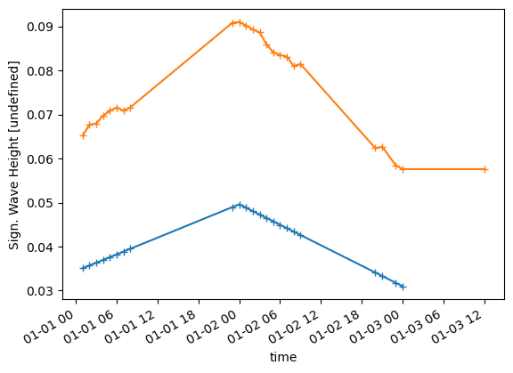
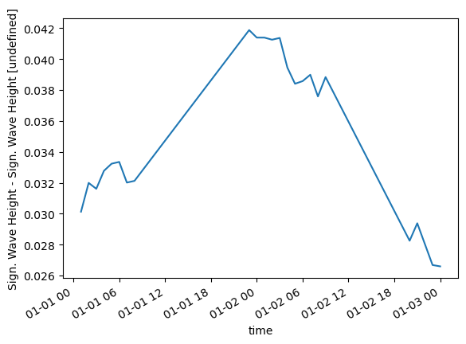

import numpy as np
import mikeioTime interpolation
ds = mikeio.read("../tests/testdata/waves.dfs2")
ds<mikeio.Dataset>
dims: (time:3, y:31, x:31)
time: 2004-01-01 00:00:00 - 2004-01-03 00:00:00 (3 records)
geometry: Grid2D (ny=31, nx=31)
items:
0: Sign. Wave Height <Significant wave height> (meter)
1: Peak Wave Period <Wave period> (second)
2: Mean Wave Direction <Mean Wave Direction> (degree)Interpolate to specific timestep
A common use case is to interpolate to a shorter timestep, in this case 1h.
ds_h = ds.interp_time(3600)
ds_h<mikeio.Dataset>
dims: (time:49, y:31, x:31)
time: 2004-01-01 00:00:00 - 2004-01-03 00:00:00 (49 records)
geometry: Grid2D (ny=31, nx=31)
items:
0: Sign. Wave Height <Significant wave height> (meter)
1: Peak Wave Period <Wave period> (second)
2: Mean Wave Direction <Mean Wave Direction> (degree)And to store the interpolated data in a new file.
ds_h.to_dfs("waves_3h.dfs2")Interpolate to time axis of another dataset
Read some non-equidistant data typically found in observed data.
ts = mikeio.read("../tests/testdata/waves.dfs0")
ts<mikeio.Dataset>
dims: (time:24)
time: 2004-01-01 01:00:00 - 2004-01-03 12:00:10 (24 non-equidistant records)
items:
0: Sign. Wave Height <Undefined> (undefined)
1: Peak Wave Period <Undefined> (undefined)
2: Mean Wave Direction <Undefined> (undefined)The observed timeseries is longer than the modelled data. Default is to fill values with NaN.
dsi = ds.interp_time(ts)dsi.timeDatetimeIndex(['2004-01-01 01:00:00', '2004-01-01 02:00:00',
'2004-01-01 03:00:00', '2004-01-01 04:00:00',
'2004-01-01 05:00:00', '2004-01-01 06:00:00',
'2004-01-01 07:00:00', '2004-01-01 08:00:00',
'2004-01-01 23:00:00', '2004-01-02 00:00:00',
'2004-01-02 01:00:00', '2004-01-02 02:00:00',
'2004-01-02 03:00:00', '2004-01-02 04:00:00',
'2004-01-02 05:00:00', '2004-01-02 06:00:00',
'2004-01-02 07:00:00', '2004-01-02 08:00:00',
'2004-01-02 09:00:00', '2004-01-02 20:00:00',
'2004-01-02 21:00:00', '2004-01-02 23:00:00',
'2004-01-03 00:00:00', '2004-01-03 12:00:10'],
dtype='datetime64[ns]', freq=None)dsi["Sign. Wave Height"].shape(24, 31, 31)ax = dsi["Sign. Wave Height"].sel(x=250, y=1200).plot(marker='+')
ts["Sign. Wave Height"].plot(ax=ax,marker='+')<AxesSubplot:xlabel='time', ylabel='Sign. Wave Height [undefined]'>
Model validation
A common metric for model validation is mean absolute error (MAE).
In the example below we calculate this metric using the model data interpolated to the observed times.
For a more elaborate model validation library which takes care of these things for you as well as calculating a number of relevant metrics, take a look at fmskill.
Use np.nanmean to skip NaN.
ts["Sign. Wave Height"]<mikeio.DataArray>
name: Sign. Wave Height
dims: (time:24)
time: 2004-01-01 01:00:00 - 2004-01-03 12:00:10 (24 non-equidistant records)
values: [0.06521, 0.06771, ..., 0.0576]dsi["Sign. Wave Height"].sel(x=250, y=1200)<mikeio.DataArray>
name: Sign. Wave Height
dims: (time:24)
time: 2004-01-01 01:00:00 - 2004-01-03 12:00:10 (24 non-equidistant records)
geometry: GeometryPoint2D(x=225.0, y=1175.0)
values: [0.03508, 0.03571, ..., nan]diff = (ts["Sign. Wave Height"] - dsi["Sign. Wave Height"].sel(x=250, y=1200))
diff.plot()<AxesSubplot:xlabel='time', ylabel='Sign. Wave Height - Sign. Wave Height [undefined]'>
mae = np.abs(diff).nanmean().to_numpy()
mae0.03509921674697619Clean up
import os
os.remove("waves_3h.dfs2")